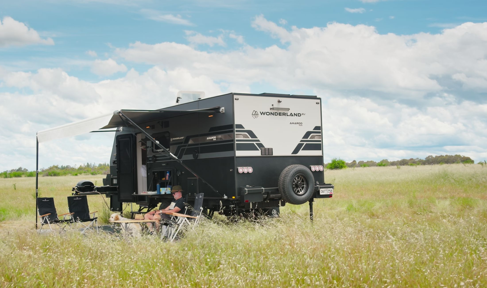
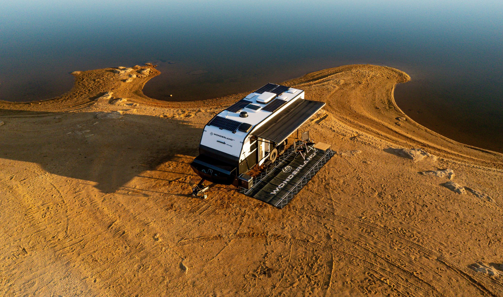
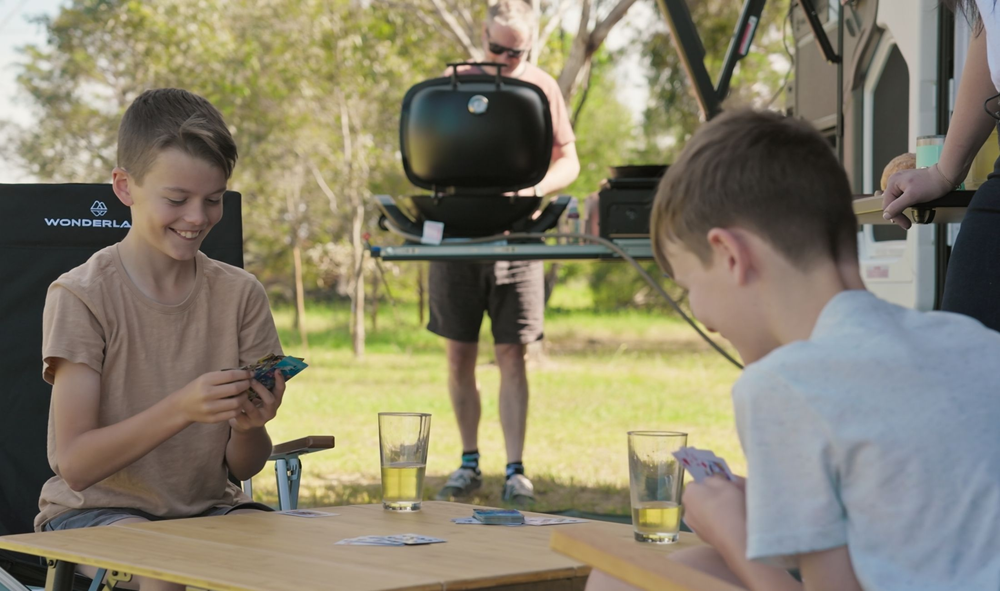
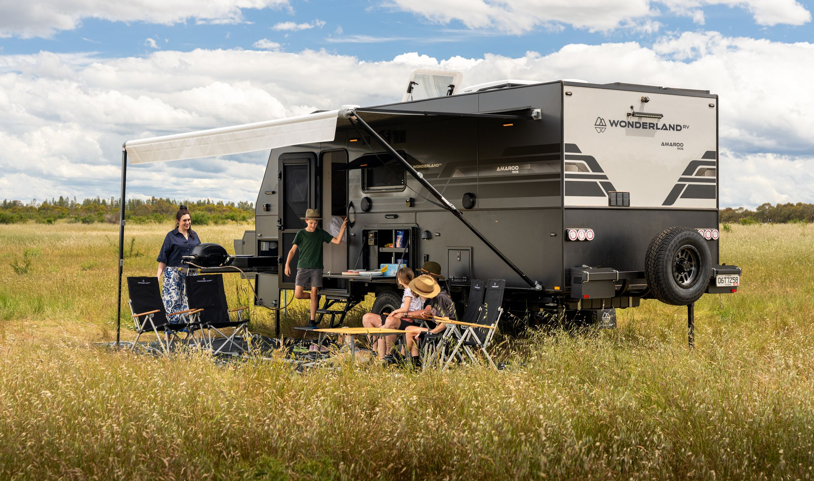
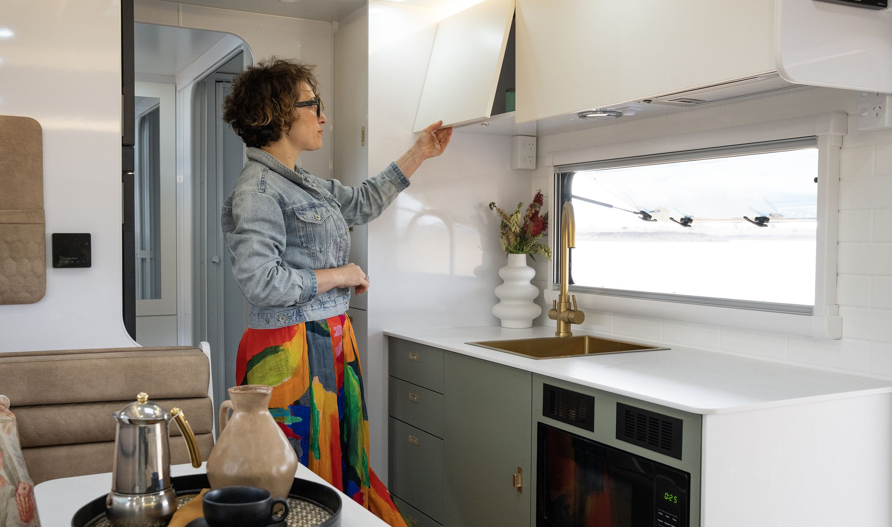

Option 3 throughout: heading 30, quote 16. The mark is 15% down from the desktop ratio in all three. What differs is only where the text sits against it. The faint red line is the 24 page margin.
| Mark | Desktop is 3.6825× the quote size. Less 15% that is 3.1301× — 50.1 wide, 29.6 tall at 16. It still meets the first letter corner to corner and still eases right by 0.4615×, so the desktop relationship is intact; only the scale moved. |
|---|---|
| Why the indent moves with it | The mark hangs to the left of the first letter by its own width less the overlap. That was 51.5 at the old size and is 42.7 now, so the text can come in 9 — which is the position optimising itself off the geometry rather than being nudged by eye. |
Text indented to 67, which puts the mark’s left edge exactly on the 24 margin, flush under the heading’s first letter. The tidiest vertical edge on the page. Measure 299.
Ready to step off the beaten path and explore in style? Embark on exceptional adventures with loved ones and create memories that will last a lifetime.”





Text at 55, mark hanging 12 past the margin into the white. The old printer’s trick — punctuation hangs so the text edge reads straight. Buys 311 of measure, but the mark no longer lines up with anything.
Ready to step off the beaten path and explore in style? Embark on exceptional adventures with loved ones and create memories that will last a lifetime.”
Mark sits above the quote on the margin, text starts at 24 and keeps the whole 342. Shortest block of the three and the easiest to read, but it drops the corner-to-corner relationship the desktop has.
Ready to step off the beaten path and explore in style? Embark on exceptional adventures with loved ones and create memories that will last a lifetime.”